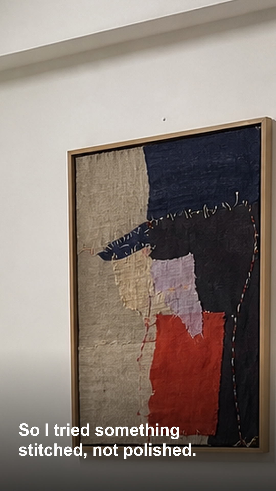

Notice
A short intake captures the feeling that should stay visible.

Investor Portfolio / Personal Art Reading
Oysterlab turns a current feeling into artwork, story, and room placement.
The thesis
Most art commerce starts with style, size, and room. Oysterlab starts with what the user needs to keep close.
The result is an original image, a placement preview, and a short story that gives the work a reason to belong.
Service model
A short intake captures the feeling that should stay visible.
The answer becomes a compact art direction: color, weight, texture, and role.
The artwork is previewed inside the user's own room.
The user keeps the image, story card, and print path.


Market entry
27-44 renters, first-home owners, remote workers, and gift buyers who want art to feel personal.
Singapore first signal, then English-speaking small-space markets.
Bedroom, kitchen, bathroom, corridor, desk wall, dining nook. Not only living rooms.
Quiz and advisory funnels are validated. Oysterlab adds the reading and the user's own room.
Current seed data
Seed TikTok Studio data shows where the first audience is forming.
Commercial ladder
Original art, wall preview, download, story card.
Print file, frame/size recommendation, before/after image.
Three directions, color/frame guide, personal PDF.

Acquisition engine
Investment strategy
Fast intake, art-direction brief, room preview, clear delivery package.
Own ordinary daily-life rooms before expanding categories.
Measure TikTok conversion across $9, $19, and $49 packages.
Codify style passports, room continuity, and visual diversity.

What we are raising for